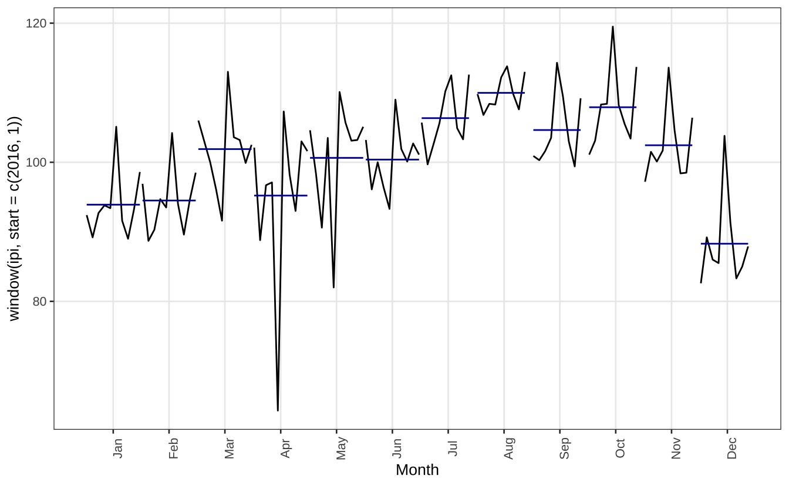
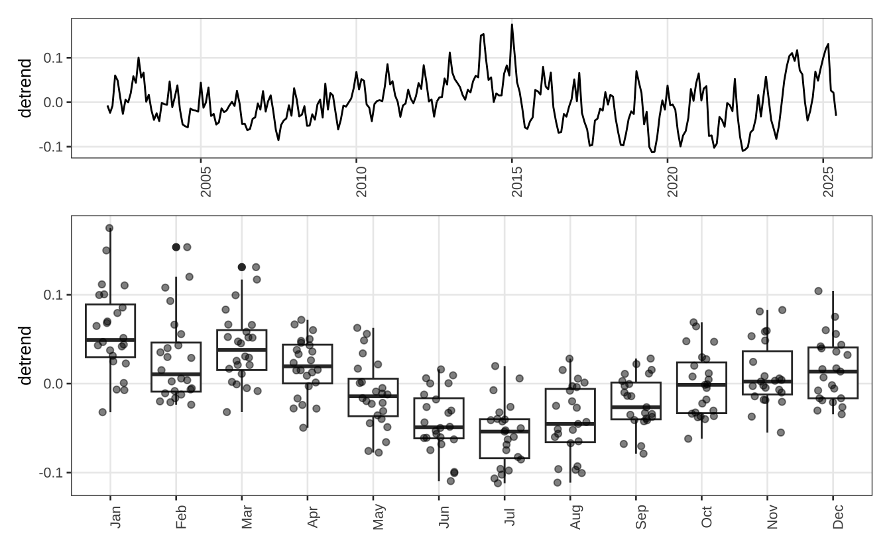
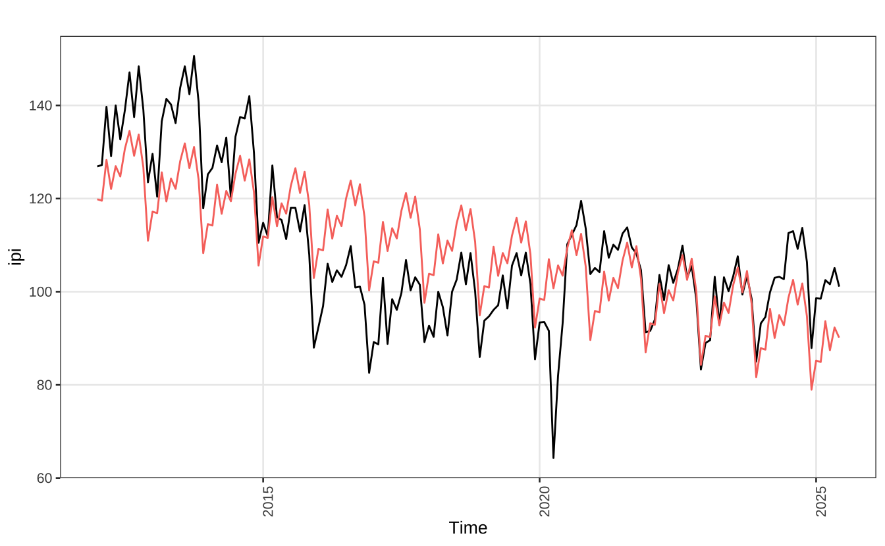
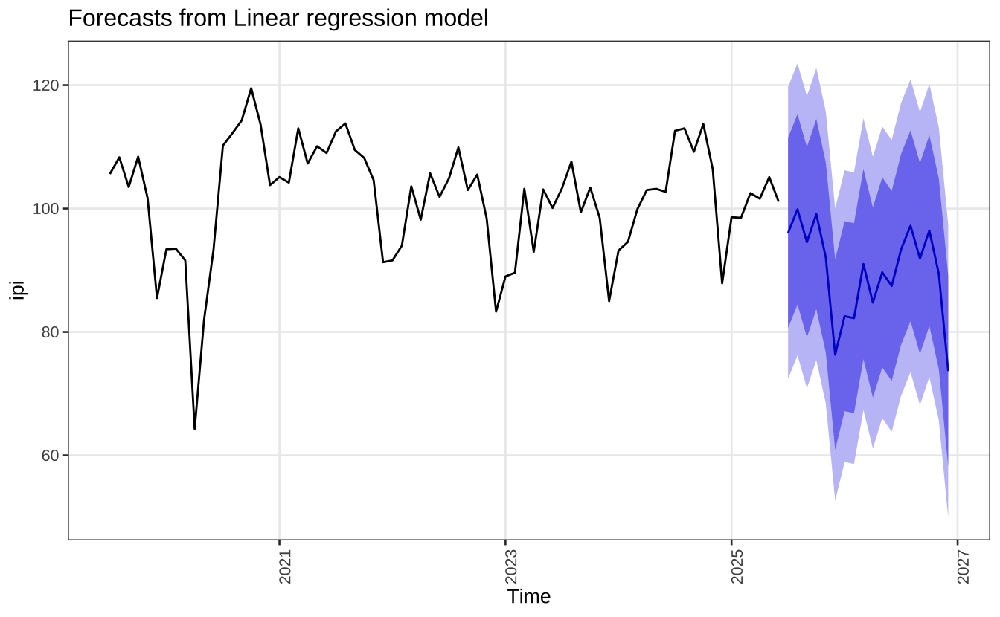
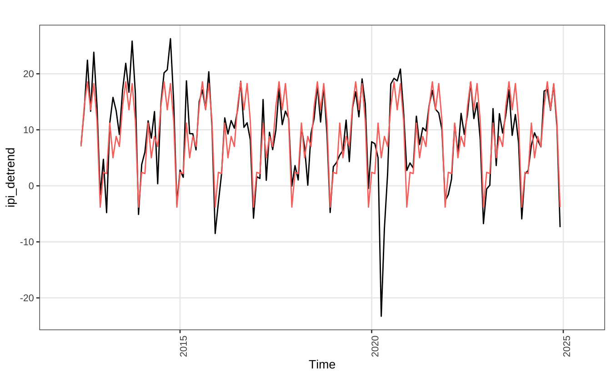
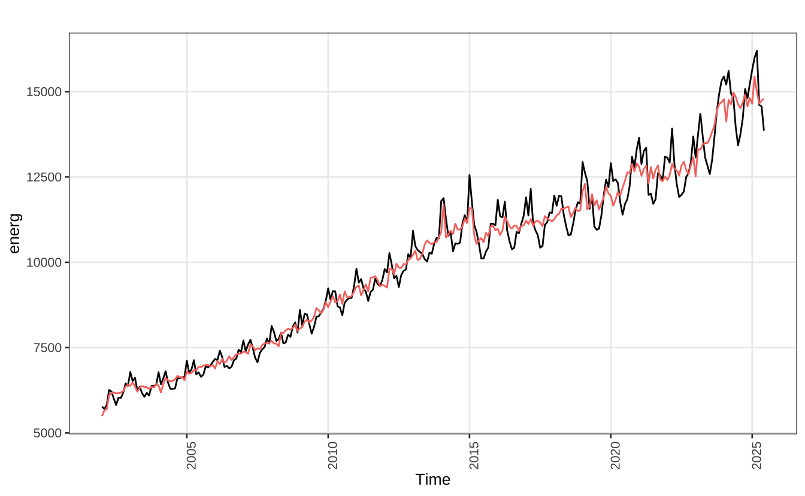

#> Séries de tempo em geral
library(forecast)
#> X-13-ARIMA-SEATS
library(seasonal)
#> Ler e converter objetos ts
library(zoo)
#> Gráficos
library(ggplot2)
#> Testes de sazonalidade
library(seastests)
#> Auxiliares
library(rvest)
library(readr)
library(dplyr)
#> https://github.com/wilsonfreitas/rbcb
library(rbcb)Tendência e Sazonalidade
Séries de tempo costumam exibir alguns padrões similares. Uma abordagem particularmente útil é de decompor uma série de tempo em componentes, que representam características específicas. Pode-se pensar numa série de tempo como uma conjunção de três componentes:
- Tendência
- Sazonalidade
- Resíduo (resto, ruído, etc.)
Em geral, a tendência varia pouco no tempo, segue algum ciclo longo, como a tendência de crescimento do PIB de um país. O movimento sazonal de uma série reflete algum tipo de variação períodica. Muitas séries possuem sazonalidade, como nfa demanda por energia elétrica ao longo dos trimestres, o número de nascimentos a cada mês, o número diário de acidentes de trânsito a cada semana, a temperatura média ao longo do dia, etc.
Entender a sazonalidade de um fenômeno é essencial para a sua modelagem estatística. Vale notar que, usualmente, o interesse de economistas e econometristas não está na sazonalidade em si, mas sim na série dessazonalizada, isto é, livre de qualquer sazonalidade. Esta abordagem enfatiza mais a busca pela tendência “limpa” da série do que pelo efeito sazonal.
A sazonalidade se expressa em várias frequências, mas a ênfase deste post será em sazonalidades mensais e trimestrais. Sazonalidades complexas (mistas, por exemplo) ou de alta frequência (intradiária, diária, semanal), em geral, exigem um pouco mais de esforço no setup e pacotes específicos1.
Setup
Primeiro, vamos carregar os pacotes necessários para seguir este post.
Vou também definir um tema para os gráficos. Este passo é opcional.
theme_series = theme_bw(base_size = 10, base_family = "sans") +
theme(
panel.grid.minor = element_blank(),
axis.text.x = element_text(angle = 90)
)Visualizando sazonalidade
Há alguns recursos simples para melhor visualizar o padrão sazonal de uma série. Primeiro vamos importar a série de Custos de Construção do IPI (Índice de Produção Industrial). O código abaixo importa a série e converte o data.frame para um objeto ts. Para facilitar a visualização dos gráficos uso um tema customizado, definido acima theme_series.
Note que esta série possui sazonalidade e também uma tendência. Inicialmente, há uma tendência de queda, no período 2014-2016; depois, há uma tendência de estabilidade, que é quebrada momentaneamente no início da pandemia do Covid-19.
#> Série do Índice de Produção Industrial - Insumos da Construção Civil
ipi = rbcb::get_series(21868, as = "ts")
autoplot(ipi) + theme_seriesA segunda série que vamos importar é a da demanda residencial por energia elétrica no Brasil. Esta série possui uma clara tendência de crescimento e, também, uma tendência sazonal.
#> Série de demanda por energia elétrica residencial (Brasil)
energ = rbcb::get_series(1403, as = "ts", start_date = as.Date("2002-01-01"))
autoplot(energ) + theme_series
A maneira mais simples de visualizar o efeito sazonal é comparando o valor de cada período dentro do seu ciclo. No caso de uma série mensal, temos (potencialmente) um ciclo que se repete a cada ano. O gráfico abaixo mostra os valores da série do IPI-CC mês a mês em cada ano. Visualmente, parece haver um pico em outubro seguido por um queda nos meses seguintes.
ggseasonplot(ipi) +
scale_color_viridis_d() +
theme_seriesA função ggsubseriesplot cria pequenos gráficos ordenando as observações dentro de cada mês. As linhas representam as observações de cada mês, ano a ano. Neste caso, é um pouco difícil enxergar a tendência sazonal já que há uma forte tendência de queda no período 2012-2014.
ggsubseriesplot(ipi) +
theme_seriesAcaba sendo mais fácil visualizar a sazonalidade quando se olha para a série a partir de 2016, quando a tendência fica mais estável. Os meses de julho a outubro parecem ser um período de alta. Já o mês de dezembro parece ser um mês de baixa.
ggsubseriesplot(window(ipi, start = c(2016, 1))) +
theme_series
Também é possível fazer um lag plot convencional.
gglagplot(ipi, seasonal = TRUE, do.lines = FALSE, lags = 12) +
scale_color_viridis_d() +
theme_seriesComo comentado, a série de energia elétrica também possui padrão sazonal. Em geral, parece haver um consumo maior de energia em dezembro e um consumo menor em junho.
ggseasonplot(energ) + theme_seriesAlternativamente, pode-se fazer um boxplot mês a mês da série. No caso abaixo, remove-se primeiro a tendência da série da energia elétrica usando um polinômio de terceiro grau. No gráfico, vê-se como a tendência sazonal aponta para menor consumo de energia nos meses de inverno, de junho a agosto, e de maior consumo nos meses de calor, de novembro a janeiro.
Code
#> Série de demanda por energia elétrica residencial (Brasil)
energ = rbcb::get_series(1403, as = "tibble", start_date = as.Date("2002-01-01"))
#> Regressão com tendência polinomial
names(energ) = c("date", "consumo")
energ$consumo = ts(log(energ$consumo), start = c(2002, 1), frequency = 12)
energ$trend = time(energ$consumo)
reg_lm = lm(consumo ~ poly(trend, 3, raw = TRUE), data = energ)
energ$detrend = residuals(reg_lm)
energ$mes = lubridate::month(energ$date, label = TRUE)
p1 <- ggplot(energ, aes(x = date, y = detrend)) +
geom_line() +
xlab(NULL) +
theme_series
p2 <- ggplot(energ, aes(x = mes, y = detrend)) +
geom_boxplot() +
geom_point(position = position_jitter(0.25), alpha = 0.5) +
xlab(NULL) +
theme_series
library(patchwork)
p1 / p2 + plot_layout(heights = c(1/3, 2/3))
Por fim, vale comentar que também é possível visualizar o padrão sazonal de série com frequência mais alta. O painel abaixo mostra a temperatura média (hora a hora) na estação Jardim Botânico de Porto Alegre (RS) nos primeiros três meses de 2023. Como comentei anteriormente, este tipo de série exige alguns pacotes específicos como xts para ser melhor processado pelo R.
temp = readr::read_rds(
"https://github.com/viniciusoike/restateinsight/raw/main/static/data/temperatura_poa_2023.rds"
)Code
temp = subset(temp, mes <= 3)
temp$mes = factor(temp$mes, labels = c("Jan", "Fev", "Mar"))
temp$ins_c = zoo::na.spline(temp$temp_ins_c)
ggplot(temp, aes(x = hora, y = temp_ins_c, color = mes, group = date_ymd)) +
geom_line(alpha = 0.8) +
facet_wrap(vars(mes), ncol = 1) +
scale_x_continuous(breaks = 0:23) +
guides(color = "none") +
labs(title = "Temperatura média Porto Alegre", x = "Hora do dia", y = "Celsius") +
theme_seriesDecomposição Clássica
A forma “clássica” de se modelar sazonalidade numa série é decompondo ela em três componentes: tendência, sazonalidade, e ruído. Assim, temos:
\[ y_{t} = T_{t} + S_{t} + u_{t} \]
Em geral, a tendência \(T_{t}\) é um polinômio, de primeiro ou segundo grau2, que depende do tempo ou uma média móvel simples. Já a sazonalidade, \(S_{t}\) entra linearmente no modelo: coloca-se uma variável binária (dummy) para cada período sazonal. No caso de uma série com sazonalidade mensal, isto significa incluir onze variáveris binárias3. O caso de uma tendência linear com sazonalidade “determinística”4 é expresso na equação abaixo.
\[ y_{t} = \alpha_{0} + \alpha_{1}t + \sum_{i = 1}^{11}\beta_{i}\delta_{i} + u_{t} \]
Neste tipo de regressão o “período-base” fica incorporado no termo de constante. Isto é, imaginando que temos uma série mensal e que janeiro seja o mês-base, o efeito de janeiro ficaria estimado junto com \(\alpha_{0}\) e os demais parâmetros. O código abaixo estima esta regressão na série de Custos de Construção do IPI e mostra os resultados.
Relativamente ao mês base (janeiro), os meses de julho a agosto exibem valores positivos de maior magnitude. Isto corrobora a inspeção visual, que apontava que estes meses eram um “período de alta”. Além disso, o modelo estima uma tendência linear e negativa, sinalizando a queda dos valores da série ao longo do tempo.
model_lm <- tslm(ipi ~ trend + season)| Characteristic | Beta | 95% CI1 | p-value |
|---|---|---|---|
| trend | -0.2896 | -0.3347, -0.2444 | <0.001 |
| season | |||
| 1 | — | — | |
| 2 | -0.1771 | -9.1606, 8.8064 | >0.9 |
| 3 | 9.5541 | 0.5703, 18.5379 | 0.037 |
| 4 | 2.3854 | -6.5990, 11.3697 | 0.6 |
| 5 | 8.1083 | -0.8769, 17.0934 | 0.077 |
| 6 | 6.1812 | -2.8050, 15.1674 | 0.2 |
| 7 | 13.0041 | 4.0166, 21.9915 | 0.005 |
| 8 | 17.3770 | 8.3880, 26.3659 | <0.001 |
| 9 | 12.2082 | 3.2176, 21.1988 | 0.008 |
| 10 | 17.0228 | 8.0302, 26.0153 | <0.001 |
| 11 | 9.7711 | 0.5841, 18.9582 | 0.037 |
| 12 | -5.6847 | -14.8728, 3.5033 | 0.2 |
| 1 CI = Confidence Interval | |||
O gráfico abaixo mostra o ajuste “interno” da série. Note como a série vermelha, dos valores previstos, exibe uma tendência linear simples e um padrão sazonal fixo e recorrente. O padrão sazonal é relativamente resiliente a outliers como no caso do início da pandemia.
autoplot(ipi) +
autolayer(fitted(model_lm)) +
guides(color = "none") +
theme_series
A decomposição clássica é bastante simples. Note que a regressão acima estima o efeito mês a mês da sazonalidade (relativamente ao mês-base), o que pode ser bastante interessante por permitir uma interpretação simples dos dados. Além disso, é bastante fácil de gerar previsões a partir deste modelo. O exemplo abaixo mostra a previsão 18 meses à frente do nosso modelo linear.
fcast = forecast(model_lm, h = 18)
autoplot(fcast, include = 72) +
theme_series
Pode-se também modelar a tendência de maneiras um pouco mais sofisticadas. Uma opção simples é usar uma média móvel. No exemplo abaixo uso uma média móvel de 12x2 meses. O resultado é apresentado na linha azul junto com a série original.
ma_trend = stats::filter(
ipi,
filter = c(1/24, rep(1/12, 10), 1/24),
method = "convolution"
)
autoplot(ipi) +
autolayer(ma_trend, color = "blue") +
guides(color = "none") +
theme_seriesPara remover a tendência subtrai-se a média móvel, calculada acima, da série original. Assim, tem-se somente o componente sazonal e o ruído.
ipi_detrend = ipi - ma_trend
autoplot(ipi_detrend) + theme_seriesNovamente, usando um modelo linear simples, temos a modelagem apenas do padrão sazonal.
model_lm2 = tslm(ipi_detrend ~ season)
autoplot(ipi_detrend) +
autolayer(fitted(model_lm2)) +
guides(color = "none") +
theme_series
Comparando os modelos, vê-se que as estimativas dos efeitos sazonais são diferentes.
| Characteristic | Tendência linear | Média Móvel | ||
|---|---|---|---|---|
| Beta | p-value | Beta | p-value | |
| trend | -0.2896 | <0.001 | ||
| season | ||||
| 1 | — | — | ||
| 2 | -0.1771 | >0.9 | -0.2992 | 0.9 |
| 3 | 9.5541 | 0.037 | 9.1337 | <0.001 |
| 4 | 2.3854 | 0.6 | 2.1705 | 0.3 |
| 5 | 8.1083 | 0.077 | 6.0471 | 0.003 |
| 6 | 6.1812 | 0.2 | 4.3697 | 0.029 |
| 7 | 13.0041 | 0.005 | 11.6693 | <0.001 |
| 8 | 17.3770 | <0.001 | 16.3905 | <0.001 |
| 9 | 12.2082 | 0.008 | 11.5568 | <0.001 |
| 10 | 17.0228 | <0.001 | 16.3383 | <0.001 |
| 11 | 9.7711 | 0.037 | 9.5591 | <0.001 |
| 12 | -5.6847 | 0.2 | -5.7295 | 0.004 |
Testando sazonalidade
Existem testes estatísticos formais para verificar a presença de sazonalidade em uma série. Pessoalmente, foram raras as ocasiões em que vi alguém testando a presença de sazonalidade; em geral, a inspeção visual é suficiente. Um teste bastante simples é verificar se coeficientes das dummies sazonais, dos modelos de regressão acima, são conjuntamente iguais a zero, isto é:
\[ H_{o} = \beta_{1} = \beta_{2} = \dots = \beta_{11} = 0 \]
No caso em que a hipótese nula é rejeitada, tem-se evidência de sazonalidade na série. Ou seja, essencialmente, faz-se um teste F para verificar a significância dos parâmetros relacionados aos termos de sazonalidade.
Há também dois possíveis testes não-paramétricos: (1) Teste de Kruskal-Wallis; e (2) Teste de Friedman.
Krukal-Wallis
O teste de Kruskal-Wallis (KW) verifica se amostras distintas foram geradas pela mesma distribuição. No caso de séries de tempo, pode-se adaptar este teste. Supondo uma série mensal, cada ano fornece 12 observações e queremos verificar se existe uma diferença entre os anos. Assim temos k amostras (k anos) de 12 observações.
Vale notar que o teste tem de ser feito sobre a série sem tendência. Aqui, aproveito a série livre de tendência utilizando o filtro MA 12x2, feito anteriormente.
# model_arima = Arima(ipi, order = c(0, 1, 1))
# ipi_detrend = residuals(model_arima)
df = data.frame(
date = as.Date.ts(ipi_detrend),
value = as.numeric(ipi_detrend)
)
tab = df |>
dplyr::filter(!is.na(value)) |>
dplyr::mutate(
rank = rank(value, ties.method = "average"),
mes = lubridate::month(date),
ano = lubridate::year(date)
)
tab |>
tidyr::pivot_wider(
id_cols = "ano",
names_from = "mes",
values_from = "rank",
names_sort = TRUE
)# A tibble: 12 × 13
ano `1` `2` `3` `4` `5` `6` `7` `8` `9` `10` `11` `12`
<dbl> <dbl> <dbl> <dbl> <dbl> <dbl> <dbl> <dbl> <dbl> <dbl> <dbl> <dbl> <dbl>
1 2012 NA NA NA NA NA 47 93 128 89 129 98 12
2 2013 38 7 72 106 91 54 111 127 108 130 107 6
3 2014 34 42 75 53 88 19 101 123 125 131 104 9
4 2015 29 24 120 59 58 44 103 112 95 124 69 2
5 2016 10 26 81 57 76 65 92 118 67 73 52 5
6 2017 25 23 105 20 61 45 63 113 70 90 79 16
7 2018 32 21 68 46 18 60 80 115 74 114 56 8
8 2019 31 36 40 43 77 37 97 109 82 121 100 15
9 2020 50 49 39 1 3 27 116 122 119 126 87 28
10 2021 35 30 83 48 66 62 99 110 94 86 64 11
11 2022 13 22 71 41 85 55 84 117 78 102 51 4
12 2023 14 17 96 33 NA NA NA NA NA NA NA NAA hipótese nula do teste é de que as diferentes amostras foram geradas pela mesma distribuição. Como se vê abaixo, o teste é rejeitado, implicando que há presença de sazonalidade.
Vale notar que o teste tem duas hipóteses bastante frágeis no contexto de séries de tempo. Primeiro, o teste supõe que as observações dentro de cada grupo são independentes, isto é, de que as observações de cada mês (janeiro, fevereiro, etc.) são indepedentes. Segundo, o teste supõe que as amostras (anos) são independentes entre si.
kruskal.test(tab$rank, tab$mes)
Kruskal-Wallis rank sum test
data: tab$rank and tab$mes
Kruskal-Wallis chi-squared = 101.18, df = 11, p-value < 2.2e-16Friedman
O teste de Friedman é muito similar ao teste KW, mas não exige independência das observações dentro de cada grupo (mês). O código abaixo executa o teste. Note que é preciso remover os anos incompletos, pois o teste somente funciona quando as amostras tem tamanho igual. Novamente, rejeita-se a hipótese nula, sugerindo que existe um padrão sazonal na série.
tab = df |>
dplyr::mutate(
mes = lubridate::month(date),
ano = lubridate::year(date)
) |>
dplyr::filter(!is.na(value), ano > 2012, ano < 2023) |>
dplyr::mutate(rank = rank(value), .by = "ano")
friedman.test(tab$rank, tab$mes, tab$ano)
Friedman rank sum test
data: tab$rank, tab$mes and tab$ano
Friedman chi-squared = 87.569, df = 11, p-value = 4.984e-14seastests
Por fim, vale notar o pacote seastests, que fornece alguns testes adicionais para verificar a presença de sazonalidade em uma série. O código abaixo executa os mesmos testes. Note que o valor da estatística de teste é diferente (ainda que a interpretação final continue a mesma). Isto acontece pois a função remove a tendência usando um modelo ARIMA (selecionado via a função auto.arima). Por fim, a função isSeasonal combina cinco testes de sazonalidade distintos e retorna um valor lógico, indicando se há sazonalidade na série.
library(seastests)
kw(ipi, 12, diff = FALSE, residuals = TRUE)Test used: Kruskall Wallis
Test statistic: 92.64
P-value: 5.107026e-15fried(ipi, 12, diff = FALSE, residuals = TRUE)Test used: Friedman rank
Test statistic: 87.95
P-value: 4.196643e-14isSeasonal(ipi, freq = 12)[1] TRUEAbordagens comuns de sazonalidade
STL
A decomposição STL é mais sofisticada do que a decomposição clássica. A metodologia STL foi apresentada no influente artigo STL: A Seasonal-Trend Decomposition Procedure Based on Loess dos autores Robert Cleveland, William Cleveland, Jean McRae e Irma Terpenning. Assim como a decomposição clássica, a decomposição STL divide uma série em três componentes: um componente de tendência (trend), uma componente sazonal (seasonal) e um componente aleatório (remainder).
O STL foi feito para ser um método versátil, resistente a outliers e eficiente (do ponto de vista computacional). Tipicamente, a decomposição STL funciona com qualquer série (mesmo quando há observações ausentes) independentemente da sua frequência. Para modelar a tendência e sazonalidade da série, o STL usa uma regressão LOESS. Além de ser mais flexível do que a média móvel, que vimos acima, a regressão LOESS não perde observações da série.
O código abaixo mostra como calcular a decomposição STL e apresenta os resultados visualmente usando a série co2 que vem pré-carregada no R. Esta série é similar a uma das utilizadas no artigo original.
stl_13 <- stl(co2, s.window = 13)
autoplot(stl_13) + theme_seriesA função stl tem diversos parâmetros de “suaviazação”, que servem para escolher o tamanho e intensidade dos ciclos de tendência e sazonalidade. Via de regra quanto maiores os valores dos argumentos x.window mais suave será o ajuste final. Outro argumento potencialmente útil é definir robust = TRUE quando a série possui outliers.
No presente contexto, o argumento mais relevante do comando stl é o s.window ou \(n_{(s)}\) na nomenclatura do artigo original. Este parâmetro, em linhas gerais, define o grau de suaviazação da tendência sazonal. Ele deve ser um número ímpar e pelo menos igual a 7. O artigo original sugere uma ferramenta visual para escolher o parâmetro, mas concede que a escolha final é arbitrária e depende da sensibilidade do usuário.
O gráfico apresentado é o seasonal-diagnostic plot. As linhas mostram a “intensidade” do efeito sazonal e os pontos indicam como este efeito sazonal varia com o ruído aleatório. Note como as variações da curva coincidem com as variações dos pontos, sugerindo que as oscilações sazonais estão sendo afetadas pelo ruído da série.
Code
components <- stl_13$time.series
dat = data.frame(
date = as.Date.ts(components),
coredata(components)
)
dat$month = lubridate::month(dat$date, label = TRUE, locale = "pt_BR")
dat$year = lubridate::year(dat$date)
dat <- dat |>
mutate(s_avg = mean(seasonal), .by = "month") |>
mutate(s1 = seasonal - s_avg, s2 = seasonal - s_avg + remainder)
ggplot(dat) +
geom_line(aes(x = year, y = s1), lwd = 0.8) +
geom_point(aes(x = year, y = s2), size = 0.8, shape = 21) +
facet_wrap(vars(month)) +
theme_seriesO gráfico abaixo repete o mesmo exercício mas utilizando s.window = 35 para suavizar a série original. Note como as curvas estão mais suaves.
Code
stl_35 <- stl(co2, s.window = 35)
components <- stl_35$time.series
dat = data.frame(
date = as.Date.ts(components),
coredata(components)
)
dat$month = lubridate::month(dat$date, label = TRUE, locale = "pt_BR")
dat$year = lubridate::year(dat$date)
dat <- dat |>
mutate(s_avg = mean(seasonal), .by = "month") |>
mutate(s1 = seasonal - s_avg, s2 = seasonal - s_avg + remainder)
ggplot(dat) +
geom_line(aes(x = year, y = s1), lwd = 0.8) +
geom_point(aes(x = year, y = s2), size = 0.8, shape = 21) +
facet_wrap(vars(month)) +
theme_seriesA função forecast::mstl oferece uma opção menos manual do ajuste STL. Esta função executa seis janelas distintas para s.window iterativamente. Os resultados costumam ser satisfatórios, mas como de costume, é necessário revisar o ajuste final.
stl_auto = mstl(co2, lambda = "auto")
autoplot(stl_auto)SARIMA
Os modelos SARIMA incluem um componente de “sazonalidade estocástica” nos modelos ARIMA. Já escrevi um post onde detalho melhor alguns aspectos teóricos deste tipo de modelo. Vale notar o modelo SARIMA não realiza uma decomposição de tendência e sazonalidade com visto acima. Quando se aplica um SARIMA, implicitamente, supõe-se que a série possui uma tendência sazonal estocástica (i.e. raiz unitária sazonal) e não uma tendência sazonal determinística5.
Como último exemplo vamos analisar a demanda mensal por gasolina. A série é da ANP e registra o total de vendas de gasolina C no Brasil em metros cúbicos.
gasolina = read_csv("...")gas = ts(na.omit(gasolina$demand), start = c(2012, 1), frequency = 12)
autoplot(gas) + theme_seriesA série parece exibir algum componente de sazonalidade. Parece haver um pico de consumo todo mês de dezembro e uma queda todo mês de fevereiro.
ggseasonplot(gas) +
scale_color_viridis_d() +
theme_seriesA escolha da ordem do modelo SARIMA exige a inspeção visual do correlograma da série. Para mais detalhes consulte meu post mais detalhado sobre o assunto. Aqui, por simplicidade, uso um modelo simples, que costuma funcionar bem para série em geral.
sarima_model = Arima(log(gas), order = c(0, 1, 1), seasonal = c(0, 1, 1))
sarima_modelSeries: log(gas)
ARIMA(0,1,1)(0,1,1)[12]
Coefficients:
ma1 sma1
-0.2719 -0.7227
s.e. 0.0973 0.0972
sigma^2 = 0.003158: log likelihood = 179.5
AIC=-353.01 AICc=-352.81 BIC=-344.52Um dos pontos fortes dos modelos SARIMA é de gerar boas previsões de curto prazo com grande facilidade. Como comentei anteriormente, não há uma interpretação simples para a sazonalidade neste tipo de abordagem.
autoplot(forecast(sarima_model), include = 48) +
theme_seriesX13-ARIMA
O X13-ARIMA ou X13-ARIMA-SEATS é a versão mais recente do X11-ARIMA, uma metodologia desenvolvida pelo US Census Bureau para lidar com a sazonalidade de séries de tempo. Este método foi pensado para lidar com o tipo de sazonalidade comumemente encontrada em séries econômicas. Os métodos de ajuste são implementados no R via o pacote seasonal.
A função principal do pacote seas realiza um ajuste sazonal automático. Para verificar os principais resultados do ajuste usa-se a função summary. O ajuste automático costuma ser bom, mas é sempre necessário revisar o ajuste.
#> Consumo mensal de energia elétrica - Residencial
energ = rbcb::get_series(1403, as = "ts", start_date = as.Date("2002-01-01"))
#> Executa a rotina do X13-ARIMA
senerg = seas(energ)
#> Resumo dos resultados
summary(senerg)
Call:
seas(x = energ)
Coefficients:
Estimate Std. Error z value Pr(>|z|)
Mon -0.0042020 0.0023735 -1.770 0.07666 .
Tue -0.0059006 0.0023706 -2.489 0.01281 *
Wed 0.0001782 0.0023459 0.076 0.93944
Thu 0.0071610 0.0023445 3.054 0.00226 **
Fri 0.0042435 0.0023327 1.819 0.06889 .
Sat -0.0009477 0.0023489 -0.403 0.68662
Easter[15] -0.0285829 0.0051214 -5.581 2.39e-08 ***
LS2002.Apr 0.0741254 0.0171309 4.327 1.51e-05 ***
AO2014.Feb 0.0807054 0.0158664 5.087 3.65e-07 ***
LS2015.Mar -0.0791423 0.0154974 -5.107 3.28e-07 ***
MA-Nonseasonal-01 0.5255629 0.0539651 9.739 < 2e-16 ***
MA-Seasonal-12 0.7236629 0.0507009 14.273 < 2e-16 ***
---
Signif. codes: 0 '***' 0.001 '**' 0.01 '*' 0.05 '.' 0.1 ' ' 1
SEATS adj. ARIMA: (0 1 1)(0 1 1) Obs.: 264 Transform: log
AICc: 3379, BIC: 3423 QS (no seasonality in final): 0
Box-Ljung (no autocorr.): 16.46 Shapiro (normality): 0.9953
Messages generated by X-13:
Warnings:
- At least one visually significant trading day peak has been
found in one or more of the estimated spectra.O gráfico abaixo mostra a série original e a série sazonalmente ajustada em vermelho. Para extrair a série ajustada usa-se a função final().
autoplot(energ) +
autolayer(final(senerg)) +
guides(color = "none") +
theme_series
O pacote seasonal é muito bem documentado e inclui um artigo de apresentação com exemplos, um texto mostrando como rodar os exemplos oficiais do X13 dentro do R e até uma ferramenta interativa. Neste post não vou explorar todas as nuances do pacote.
Para conseguir um ajuste mais adequado é preciso explorar os argumentos adicionais da função seas além de adaptar as variáveis de calendário. Na sua configuração padrão, a função seas não considera o efeito do carnaval, por exemplo. É possível criar eventos de calendário usando a função genhol (de “generate holiday”).
Um recurso bastante útil para conseguir as datas das festividades brasileiras é o site do prof. Roberto Cabral de Mello Borges. O código abaixo extrai a tabela com as datas da Páscoa, Carnaval e Corpus Christi de 1951-2078.
Code
library(rvest)
url = "https://www.inf.ufrgs.br/~cabral/tabela_pascoa.html"
tabela = url |>
read_html() |>
html_table()
tab = tabela[[1]]
feriados_bra = data.frame(tab[-1, ])
names(feriados_bra) = as.character(tab[1, ])
head(feriados_bra) Ano a b c d e d+e Dia Mês Páscoa Carnaval Corpus Christi
1 1951 13 3 5 1 2 3 25 Março 25/mar/1951 06/fev/1951 24/mai/1951
2 1952 14 0 6 20 2 22 13 Abril 13/abr/1952 26/fev/1952 12/jun/1952
3 1953 15 1 0 9 5 14 5 Abril 05/abr/1953 17/fev/1953 04/jun/1953
4 1954 16 2 1 28 6 34 18 Abril 18/abr/1954 02/mar/1954 17/jun/1954
5 1955 17 3 2 17 2 19 10 Abril 10/abr/1955 22/fev/1955 09/jun/1955
6 1956 18 0 3 6 4 10 1 Abril 01/abr/1956 14/fev/1956 31/mai/1956Para utilizar este dado no X13-ARIMA é necessário converter a coluna Carnaval num tipo Date e então utilizar a função genhol. Para facilitar a leitura das datas uso o pacote readr.
library(readr)
feriados_bra$date_carnaval = parse_date(
feriados_bra$Carnaval,
format = "%d/%b/%Y",
locale = locale("pt")
)
carnaval = genhol(feriados_bra$date_carnaval, start = -3, end = 1, frequency = 12)As datas de carnaval são inseridas dentro do X13-ARIMA via o argumento xreg.
senerg = seas(
energ,
xreg = carnaval,
regression.variables = "td1coef",
arima.model = c(0, 1, 1, 0, 1, 1)
)
summary(senerg)
Call:
seas(x = energ, xreg = carnaval, regression.variables = "td1coef",
arima.model = c(0, 1, 1, 0, 1, 1))
Coefficients:
Estimate Std. Error z value Pr(>|z|)
xreg -0.027271 0.006800 -4.011 6.05e-05 ***
Easter[15] -0.042946 0.006329 -6.786 1.16e-11 ***
LS2015.Mar -0.079623 0.016601 -4.796 1.62e-06 ***
MA-Nonseasonal-01 0.597775 0.049154 12.161 < 2e-16 ***
MA-Seasonal-12 0.707968 0.049235 14.379 < 2e-16 ***
---
Signif. codes: 0 '***' 0.001 '**' 0.01 '*' 0.05 '.' 0.1 ' ' 1
SEATS adj. ARIMA: (0 1 1)(0 1 1) Obs.: 264 Transform: log
AICc: 3431, BIC: 3451 QS (no seasonality in final):4.891 .
Box-Ljung (no autocorr.): 108 *** Shapiro (normality): 0.9928
Messages generated by X-13:
Warnings:
- At least one visually significant trading day peak has been
found in one or more of the estimated spectra.O gráfico abaixo mostra o resulado do ajuste com as datas de feriado modificadas.
autoplot(energ) +
autolayer(final(senerg)) +
guides(color = "none") +
theme_seriesFootnotes
Para uma referência para séries com sazonalidade complexa no R veja Hyndman e Athansopoulos (2021) Forecasting: Principles and Practice.↩︎
Pode-se usar um polinômio de qualquer grau, mas polinômios de ordens muito elevadas costumam se ajustar “perfeitamente” aos dados e vão absorver toda a sazonalidade da série.↩︎
Sempre coloca-se uma variável binária a menos do que períodos sazonais pela questão do posto da matriz de regressores. Na prática, se houvesse uma dummy para cada período sazonal a matriz de regressão seria uma matriz identidade.↩︎
É comum ver esta expressão nos textos de séries de tempo; em geral o termo é utilizado em contraste com modelos SARIMA onde a sazonalidade é estocástica, mas o termo “determinístico” não tem implicação causal. Na prática, quer dizer que a sazonalidade não varia no tempo e é sempre a mesma o que pode gerar previsões ruins a depender do caso.↩︎
Para uma boa apresentação sobre raiz unitária e sobre tendências determinísticas veja Enders (2009) Applied Econometric Time Series.↩︎